怎么在 VS Code 中使用 LaTeX
这篇笔记整理自本地 Word 教程，核心流程分为三步：安装 TeX Live，验证命令行编译器，再在 VS Code 中安装插件并配置 LaTeX Workshop。
下载 TeX Live
第一步是下载 LaTeX 的编译器。常用选择是 TeX Live，可以从国内镜像站下载，例如清华大学开源软件镜像站的 TeX Live Images 目录。
镜像目录里通常会有多个 ISO 文件，选择一个合适版本即可。下载速度可能偏慢，如果已经有离线安装材料，也可以直接使用本地 ISO。
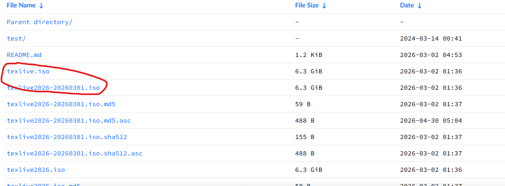
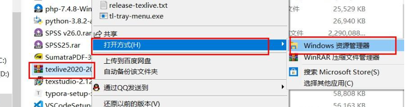
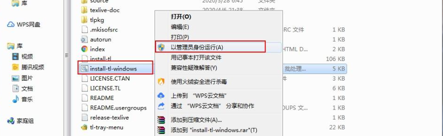
安装 TeX Live
下载完成后，右键挂载 ISO 镜像文件。在虚拟光驱里找到 install-tl-windows.bat，右键选择“以管理员身份运行”。安装路径尽量不要包含中文字符，也不建议安装在 C 盘。
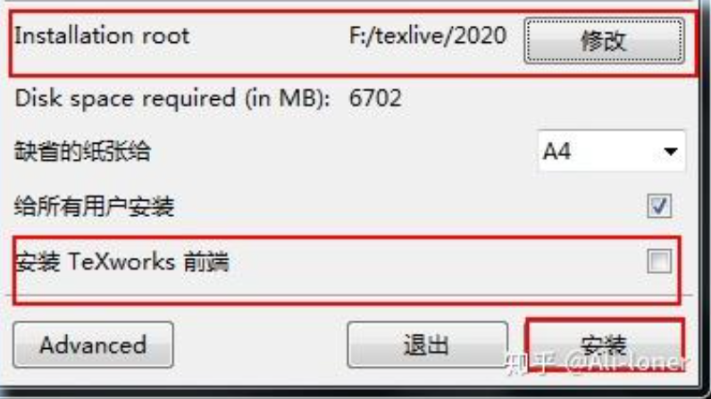
安装过程中注意保留“修改注册表”或 Adjust searchpath 相关选项。它的作用是把 TeX Live 添加到系统搜索路径中；如果没有勾选，后面需要手动在环境变量里添加对应编译器路径。
点击安装后耐心等待。TeX Live 体积比较大，安装通常需要 1 到 2 小时，完成后点击“完成”即可。
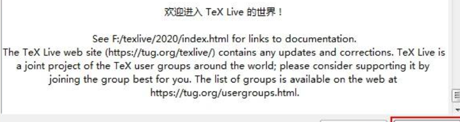
验证安装
按 Win + R 打开运行窗口，输入 cmd 打开命令行，然后执行 xelatex -v。如果能输出版本信息，说明编译器已经可以被系统识别。
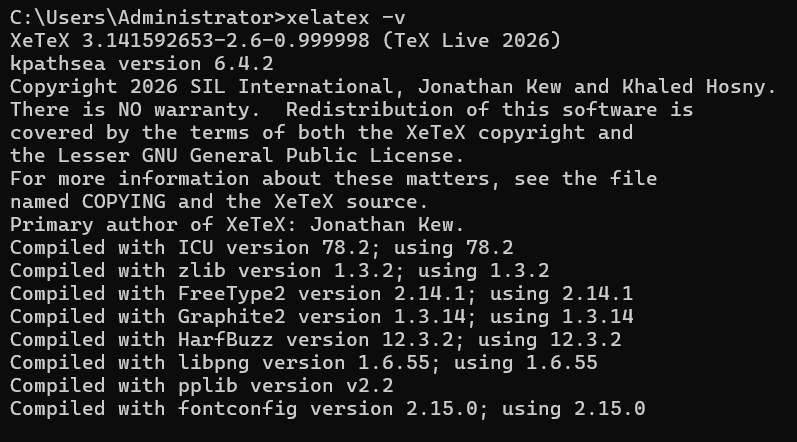
安装 VS Code 和插件
第三步是安装 VS Code。可以在浏览器中搜索 VS Code，也可以直接访问 Visual Studio Code 官网下载安装包。
VS Code 安装完成后，在扩展市场安装 LaTeX 相关插件。常用插件包括 LaTeX 语法支持、LaTeX Workshop，以及用于辅助写作或补全的 Codex 插件。
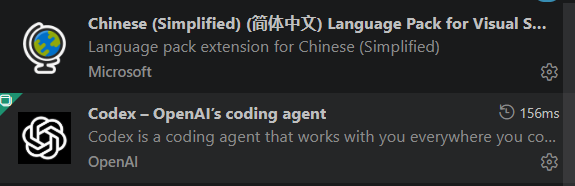
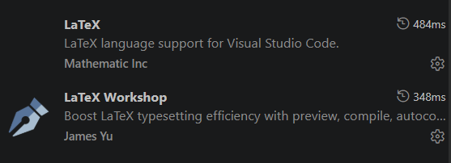
LaTeX 语法插件主要负责语法高亮和检查，LaTeX Workshop 负责编译、预览和项目面板，Codex 可以用于辅助生成或修改 LaTeX 内容。
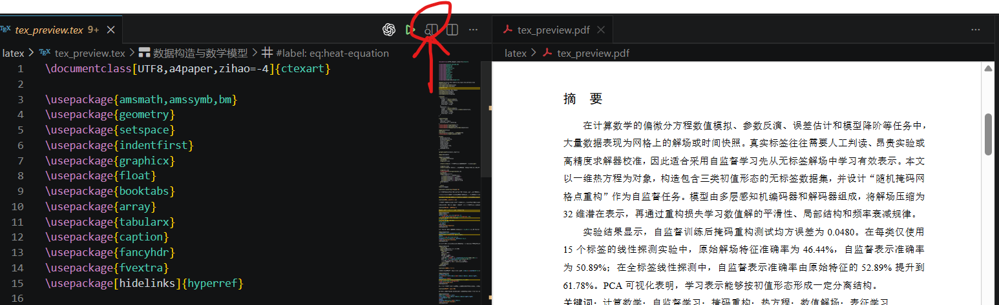
配置 LaTeX Workshop
在 VS Code 左下角点击齿轮图标，进入“设置”。
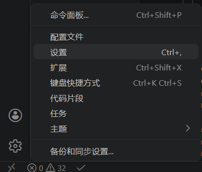
打开设置后，进入 settings.json。如果文件是空的，直接粘贴下面的配置；如果已经有内容，把这些配置合并到最外层 JSON 对象里。
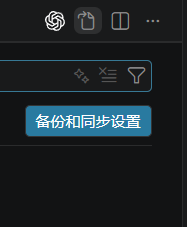
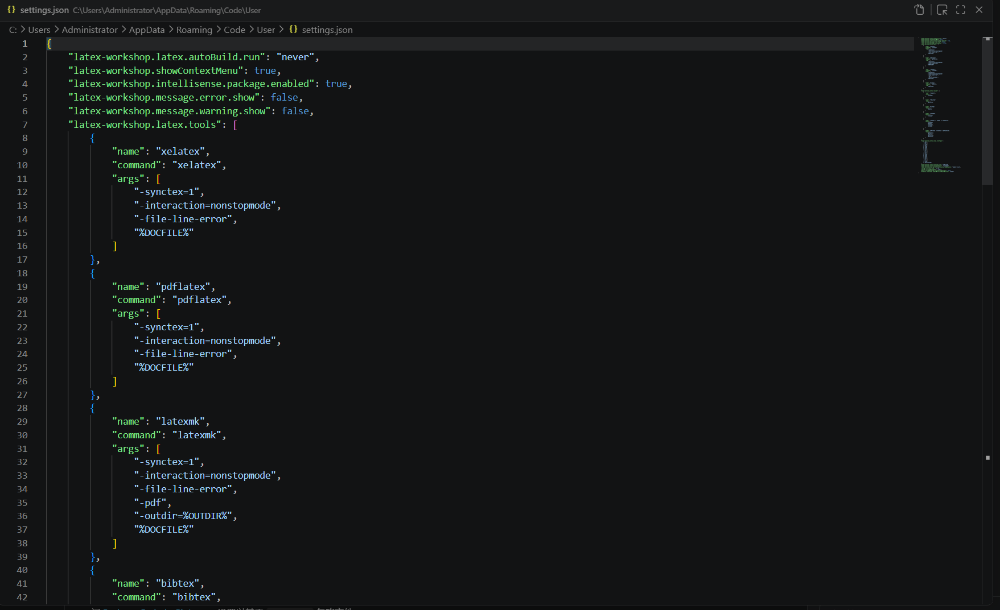
{
"latex-workshop.latex.autoBuild.run": "never",
"latex-workshop.showContextMenu": true,
"latex-workshop.intellisense.package.enabled": true,
"latex-workshop.message.error.show": false,
"latex-workshop.message.warning.show": false,
"latex-workshop.latex.tools": [
{
"name": "xelatex",
"command": "xelatex",
"args": [
"-synctex=1",
"-interaction=nonstopmode",
"-file-line-error",
"%DOCFILE%"
]
},
{
"name": "pdflatex",
"command": "pdflatex",
"args": [
"-synctex=1",
"-interaction=nonstopmode",
"-file-line-error",
"%DOCFILE%"
]
},
{
"name": "latexmk",
"command": "latexmk",
"args": [
"-synctex=1",
"-interaction=nonstopmode",
"-file-line-error",
"-pdf",
"-outdir=%OUTDIR%",
"%DOCFILE%"
]
},
{
"name": "bibtex",
"command": "bibtex",
"args": [
"%DOCFILE%"
]
}
],
"latex-workshop.latex.recipes": [
{
"name": "XeLaTeX",
"tools": [
"xelatex"
]
},
{
"name": "PDFLaTeX",
"tools": [
"pdflatex"
]
},
{
"name": "BibTeX",
"tools": [
"bibtex"
]
},
{
"name": "LaTeXmk",
"tools": [
"latexmk"
]
},
{
"name": "xelatex -> bibtex -> xelatex*2",
"tools": [
"xelatex",
"bibtex",
"xelatex",
"xelatex"
]
},
{
"name": "pdflatex -> bibtex -> pdflatex*2",
"tools": [
"pdflatex",
"bibtex",
"pdflatex",
"pdflatex"
]
}
],
"latex-workshop.latex.clean.fileTypes": [
"*.aux",
"*.bbl",
"*.blg",
"*.idx",
"*.ind",
"*.lof",
"*.lot",
"*.out",
"*.toc",
"*.acn",
"*.acr",
"*.alg",
"*.glg",
"*.glo",
"*.gls",
"*.ist",
"*.fls",
"*.log",
"*.fdb_latexmk"
],
"latex-workshop.latex.autoClean.run": "onFailed",
"latex-workshop.latex.recipe.default": "lastUsed",
"latex-workshop.view.pdf.internal.synctex.keybinding": "double-click"
}选择编译配方
配置完成后，点击任意 TeX 文件，侧边栏会出现 LaTeX Workshop 面板。展开“构建 LaTeX 项目”，可以看到不同编译配方。
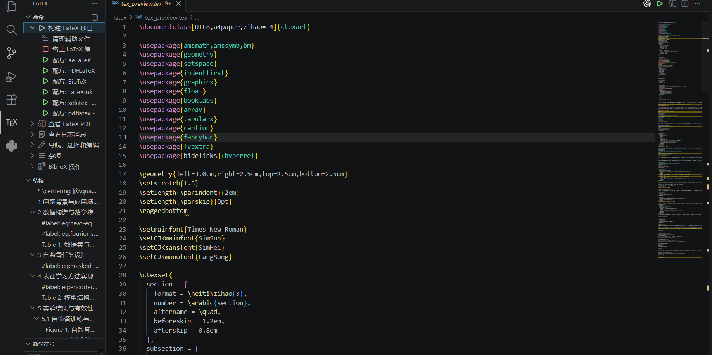
XeLaTeX 和 PDFLaTeX 面向不同模板，一般不能随意混用。国内常见中文模板通常更适合 XeLaTeX，例如学校论文模板；国外通用模板常见 PDFLaTeX，例如 IEEE 模板。
BibTeX 不是正文编译器，而是文献引用编译器。很多论文网站都会提供 BibTeX 引用格式，可以复制到自己的 .bib 文件中。
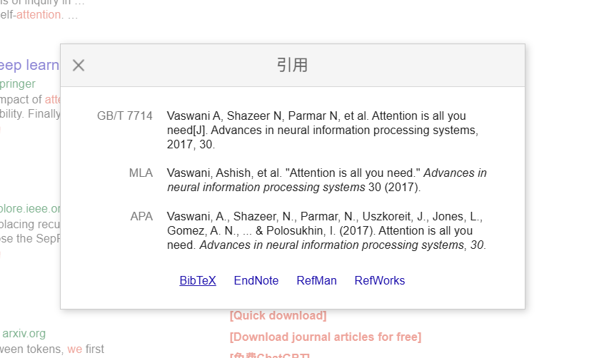
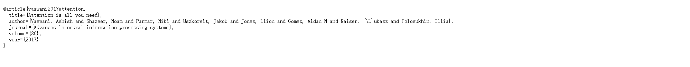
最常用的是最后两个组合配方：xelatex -> bibtex -> xelatex*2 和 pdflatex -> bibtex -> pdflatex*2。它们的本质是先编译正文，再编译文献，最后把文献、图片和表格引用结果重新带回正文。